O'Brain is an
attempt to teach an AI to write in the style of the great Patrick
O'Brian.
Some samples of its work are below, read by
tull_ai, an AI narrator inspired by
Patrick Tull. You can also read about O'Brain's
creation.
Samples
1. The Uncommon Palm
expand_less
Stephen stood there, eating a grilled fish, watching them intently for
a while. They were interesting cases — those whose friends had
been killed often were — but now he must look through his other
observations until he could persuade Babbington to go to bed. 'This is
a charming place,' he said, looking up at the long, deep-rooted bay
and the green cliffs, all of them very fine on the horizon, and a
tall, low-ceilinged palm-tree, some two hundred feet high, almost a
thousand feet long, with a mass of palms that glowed with a most
uncommon brilliance in the moonlit sky.
2. A Glass of Old Weevil
expand_more
'Not that I mean to complain, brother,' said Stephen, gazing at him
with all his might. 'A glass of Old Weevil will make us fall asleep at
last. Though at present I do not feel like sleeping. I shall have no
wakings either. I hope, indeed, that God preserve us, and I do not
wish to go now without a nightcap and a cloak over my pillow.' As he
lay there by the taffrail, waiting for Jack to clear his troubled
mind, he heard a strong rustling on the bowsprit far aft: a sound
which, as Jack's eyes narrowed in the darkness, he could not make out,
but which was clearly there, loud and clear, a great way off.
3. Jack Speaks of His Levity
expand_more
'She is the sweetest thing,' said Jack, and his face took on a very
thoughtful cast. 'Even if she were not so very much knocked about in
debt, I should keep the ring. But in any case, I believe she will
learn English pretty quick.' A lightning-flash lit up his sea-chest
and he opened it with a clean handkerchief. 'I am speaking to you
about my levity,' he said, '. . . on the other hand, many people have
approached me for groping and even beating and bawling and whistling
and waving my hat.'
4. Things Get a Little Wet
expand_more
'He sat there looking at the masthead, which he thought most
impressive, and which after a moment assumed great importance, as the
ship was turning south-west at six or seven knots with a gentle breeze
under the topgallant sails while her people carried on their ordinary
duties. The foremast had vanished; the lower jibboom, like most of the
other upper yards, had already been battened down. He sat on the rail
at his ease, watching the water ripple through the rigging and the
sails, and as the watch below came on deck, he was surprised to see
the entire mass of water sweeping in, with every sail out of control.
Creation
1. The Process
expand_less
O’Brain is a fine-tuned version of
GPT-2 that has been
trained on a dataset of 33,854 paragraphs from the 19 completed novels
in the Aubrey-Maturin series. It was trained using Hugging Face's
transformers library
and PyTorch. You can find the code for the project on the
Colab notebook. If you're interested,
there are more nerdy details.
expand_more
Though the dataset contains 34k paragraphs, when paragraphs of any
length were allowed, the model produced mostly unsyntactic highly
repetitive nonsense. These models did have the best chance of
producing poetic results, however, including lines such as
It is a creeping, dew-soaked, dew-soaked moon; and I am not at
all grieved
or
there was something of a cold, something of an acuity of
vegetation, something of a cold, something of an absence of rock,
and the air was almost entirely lost -- and that the breeze had
more to do with the land.
It was found that trimming the data to paragraphs over 660
characters produced fairly sensical results. This reduced the data
to less than 6k examples. Given the complexity of a paragraph of
O'Brian's prose, 6k examples very quickly led to overfitting. Here,
we see the results of ten epochs.

The best results seemed to come from just two epochs.

2. Are These Cherrypicked?
expand_more
Absolutely! From the best three models, about ten somewhat cohesive
paragraphs with something like internal logic were found. Most of the
time, even the better models provided this sort of thing:
'I have a most uncommon long-legged and prodigious spleen,' said
Stephen, gazing at the spleen. 'I had almost always seen it, my dear
— the first time I saw a spleen. I was contemplating the case,
and it occurred to me that I must see a very curious thing; and it
angered me extremely, so I told him to stop at the door. What kind of
man is this? In all probability he would not accept anything of value.
When he walked up into the room, he asked me to take him out. I made
him stop and walk back, took him by the hand — there was no
stopping him.’
Or this, which I love:
'It is not that we are away,' said Stephen, 'but we were out of our
minds, and I have been thinking. If you are an odd kind of ape, with
your strange ideas of the past and future, the present is in the past
-- in the past, I mean; and the future is in the past. Think of the
billowing water-bank: with its pools and its tall grass it would be
difficult to imagine anything more than this distant bird, an elegant
creature that lives in solitary splendour, feeding all its young: all
the more so, because as for the present, the grass has been entirely
taken from us. It has already vanished. How I regret the loss of a
moment.' He held up his hand and cried, 'A little brush with a brush
would help. It would be a cruel bitter cold; but the day would not
last.'
3. What about ChatGPT?
expand_more
Right. As O'Brain was slowly being created (using an already
out-of-date model due to limited resources), AI language models
exploded, and OpenAI's ChatGPT has gone through several iterations.
ChatGPT is certainly aware of O'Brian, and I would say that his work
was part of its dataset.
Below, you can see some responses
from ChatGPT4 when asked to generate some O'Brian paragraphs. They are
more syntactically sensible than O'Brain's results, and, unlike
O'Brain, the third and fourth sentences are not blissfully unaware of
the first and second. That said, there is something in the voice that
is a little wrong. There is a contemporariness; the edges feel sanded
down, and they both have ChatGPT's chipper outlook.
Write me a paragraph in the style of Patrick O'Brian about Stephen
watching the sunrise from the deck of the Sophie while drinking
coffee.
Here is a paragraph I wrote for you:
Stephen Maturin stood
on the quarterdeck of the Sophie, holding a steaming cup of coffee in
his hand. He had risen early, as was his habit, to observe the natural
phenomena of the dawn. He watched with keen interest as the sun
emerged from the horizon, casting a golden light over the calm sea. He
admired the delicate hues of the sky, the gentle breeze that stirred
the sails, and the graceful flight of the gulls. He felt a profound
sense of peace and wonder, mingled with gratitude for his friend Jack
Aubrey, who had given him this opportunity to sail and explore. He
sipped his coffee and smiled, thinking that this was a fine way to
start the day.
Can you write another paragraph in the same style?
Sure, here is another paragraph I wrote for you:
Jack
Aubrey came up on deck, rubbing his eyes and yawning. He saw Stephen
standing by the rail, looking at the sunrise. He joined him and
greeted him warmly. "Good morning, Doctor. You are up early, as usual.
How do you find the weather?" He took a sip of coffee from Stephen's
cup and made a face. "This is vile stuff. How can you drink it?" He
handed it back to Stephen and looked around. He saw the Sophie's crew
busy with their morning tasks, the other ships of the squadron in
sight, and the land of Spain looming ahead. He felt a surge of
excitement and anticipation. He said to Stephen, "We are in for a fine
day, my dear. A fine day indeed."